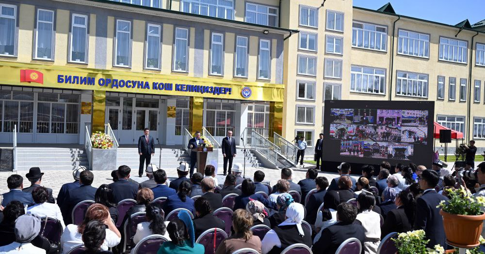
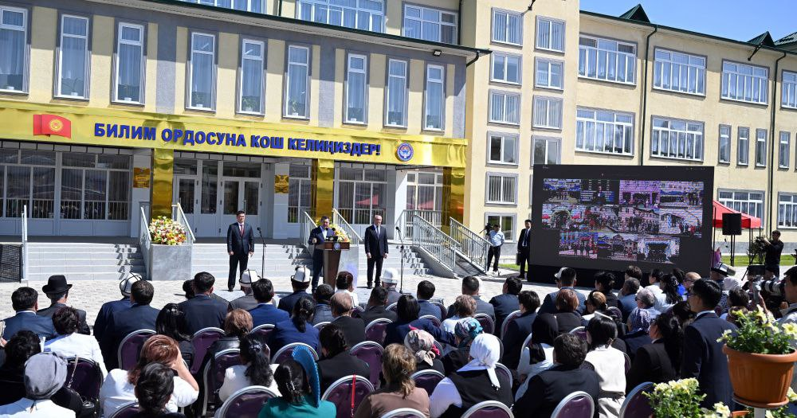

Наша школа была открыта в 2023 году в Оше. Мы гордимся созданием отличных условий для обучения детей, где каждый может проявить свои способности.

Школа № 20 имени Исхака Раззакова — одно из старейших образовательных учреждений города Ош с богатой историей, уходящей корнями в советский период.
Основанная во времена Советского Союза, школа первоначально располагалась в районе Черёмушки на улице Урицкого. В те годы учебное заведение предоставляло качественное образование, воспитывая в учениках дисциплину, патриотизм и стремление к знаниям.
Долгое время школой руководила Карпушкина Светлана Михайловна, внёсшая значительный вклад в развитие учебного процесса и поддержание высокого уровня образования. Благодаря её усилиям внедрялись современные методики преподавания, и школа продолжала оставаться ведущим образовательным учреждением города.
В 2015 году мощное землетрясение нанесло серьёзный ущерб зданию школы, после чего оно было признано аварийным. В результате ученики и педагогический состав были временно переведены в школу имени И. В. Панфилова, что позволило продолжить образовательный процесс без значительных перерывов.
После признания старого здания аварийным было принято решение о строительстве нового современного учебного корпуса на том же участке. Однако из-за нехватки финансирования строительство было приостановлено и возобновилось только в 2022 году в рамках государственной программы модернизации образовательных учреждений. Новый комплекс, рассчитанный на 720 ученических мест, был завершён и готов принять учащихся и преподавателей.
6 мая 2024 года состоялось торжественное открытие нового здания школы при участии Президента Кыргызской Республики Садыра Жапарова. В своей речи глава государства подчеркнул значимость этого события для города и страны в целом, отметив, что каждая построенная школа — это вклад в развитие государства. Он также отметил, что за последние три года в республике построено 315 школ и 69 детских садов, что свидетельствует о приоритетности сферы образования для правительства.
До недавнего времени школа носила статус гимназии, который позволял углублённое изучение ряда дисциплин. Однако в последние годы, в связи с изменениями в системе образования и внутренними реформами, школа утратила статус гимназии и теперь является средней школой.
Сегодня школа № 20 имени Исхака Раззакова располагается по адресу: г. Ош, Черёмушки, улица Урицкого, 2. В новом здании созданы все условия для комфортного и качественного обучения: современные учебные классы, спортивные площадки, беговые дорожки, зоны отдыха, а также внедрены передовые технологии в образовательный процесс. Руководит школой Ташбаев Акылбек Мазанович, который продолжает традиции качественного образования и стремится сделать школу одним из ведущих учебных заведений региона.
История школы № 20 имени Исхака Раззакова — это пример стойкости и стремления к развитию. Пройдя через испытания и преодолев трудности, школа продолжает выполнять свою миссию, воспитывая новое поколение граждан, готовых внести вклад в будущее Кыргызстана.